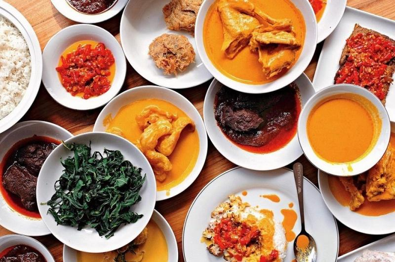

Pernahkah Moms penasaran tentang sejarah dari nasi Padang?
Dilansir dari laman Greatnesia, ada temuan menarik yang ditinjau menurut dosen dan peneliti dari Universitas Leiden, Suryadi Sunuri.
Ia mengungkapkan, penggunaan nama “Restoran Padang” atau “Rumah Makan Padang” ditemukan pada sebuah iklan surat kabar yang terbit pada tahun 1937. Disebutnya, pemilik rumah makan Padang itu bernama Ismael Naim. “Padangsch-Resrtaurant” merupakan persamaan dari istilah ” Restoran Padang ” yang dikenal di rantau pada zaman sekarang ini. Istilah tersebut terkait dengan pemakaian bahasa Belanda pada zaman kolonial. Jadi, bisa dikatakan popularitas masakan padang sudah melegenda sejak zaman dulu.
Dilansir dari Fat Secret Indonesia, kira-kira 1 porsi dari nasi padang, yaitu mengandung 664 kalori, dengan 15 gram lemak, 70 gram karbohidrat, dan 70 gram protein. Tentunya, kalorinya akan berbeda apabila Moms menyantapnya dengan pilihan lauk yang berbeda-beda, ya. Meskipun kalori nasi Padang cukup besar, tidak ada salahnya untuk sesekali mencoba menyantapnya. Sebab, cita rasa dari nasi padang ini memang tidak ada duanya yang dilengkapi dengan filosofi dan sejarah menarik di baliknya.